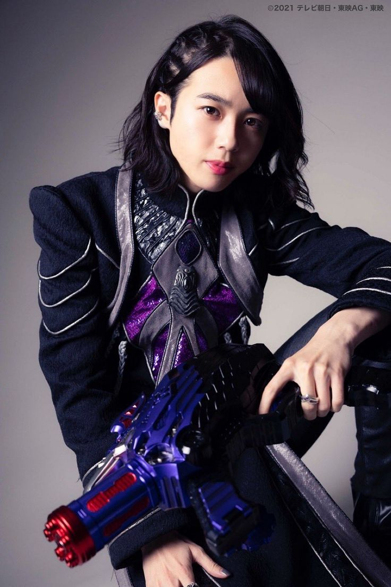
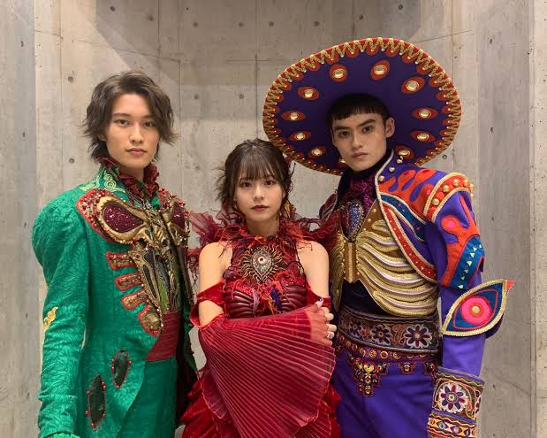
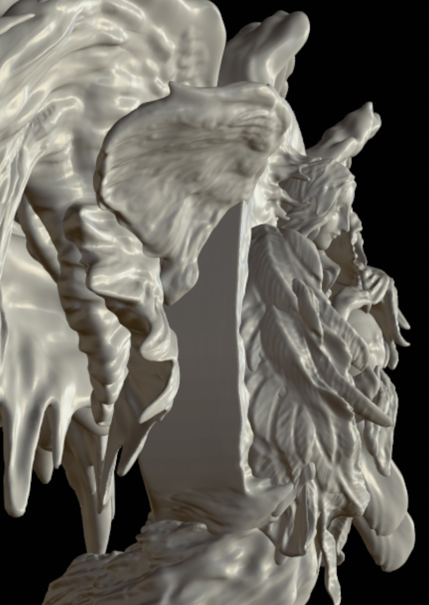
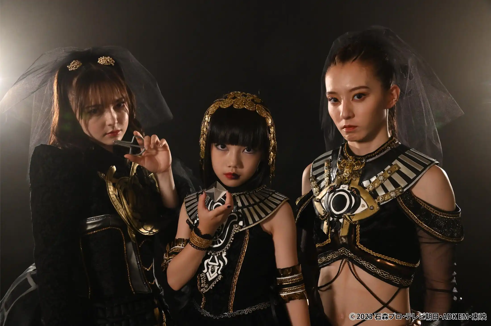
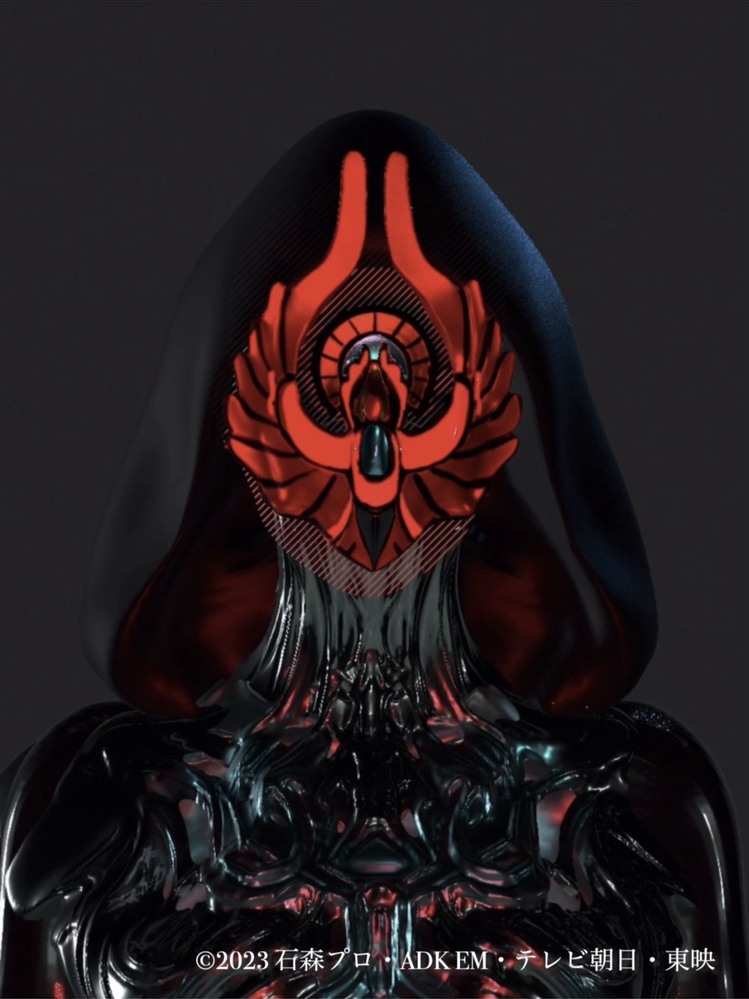

Selected works in Japanese tokusatsu television dramas (special effects superhero TV series).
「ゼンカイジャー VS キラメイジャー VS センパイジャー」
「暴太郎戦隊ドンブラザーズ VS ゼンカイジャー」
「仮面ライダーリバイス バトルファミリア」
「仮面ライダーガッチャード ザ・フューチャー・デイブレイク」 冥黒のデスマスク デザイン
「仮面ライダージュウガ VS 仮面ライダー オルテカ」
「冥黒の黙示録 ラケシス」
「冥黒の三姉妹プレゼンツ 仮面ライダーガッチャード未完計画」




